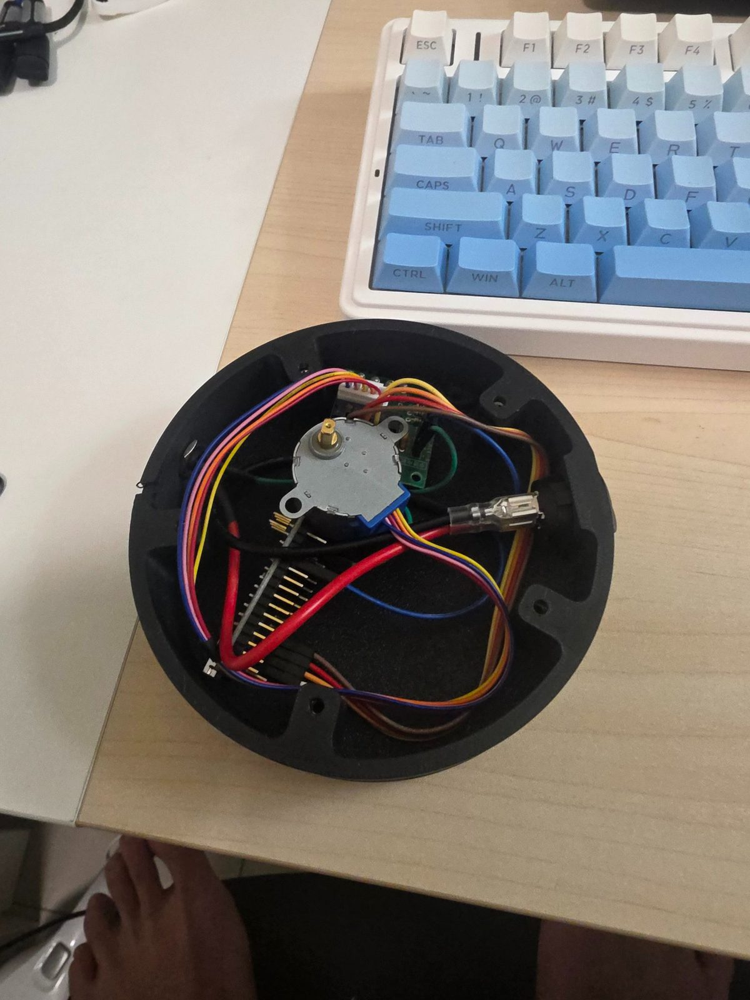
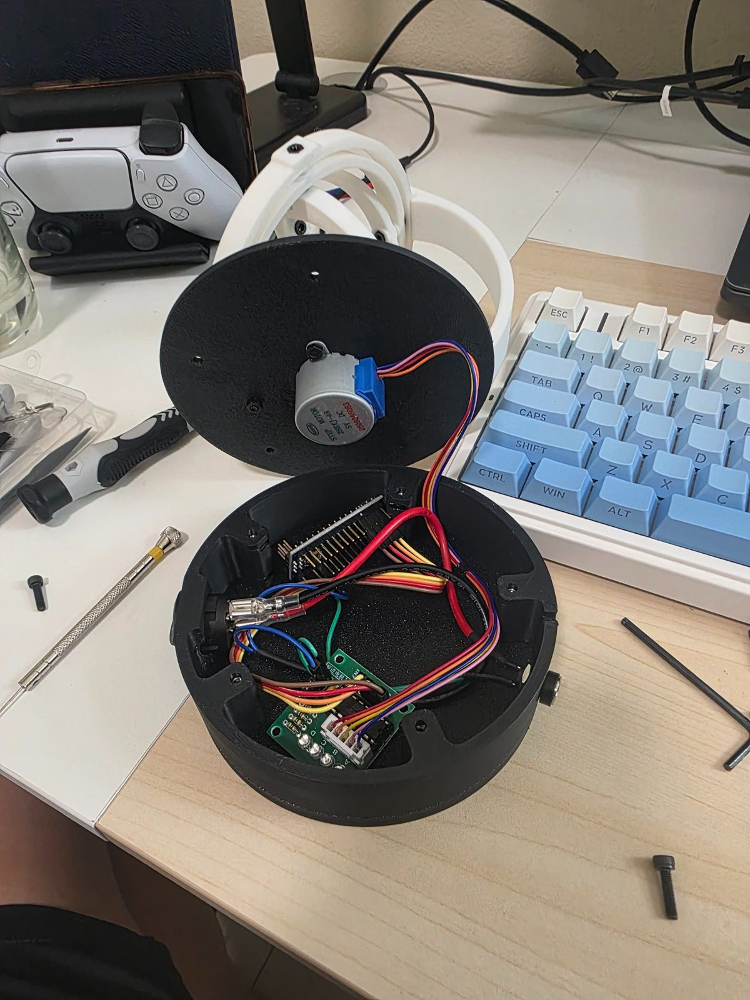

A Hobby That Needed Its Own Solution
I collect and assemble automatic watches. Unlike quartz watches, automatics are wound by the natural motion of the wearer's wrist — a beautiful piece of mechanical engineering that needs no battery. The problem: when you own more watches than you can wear, any watch left sitting for a few days winds down completely. Every time you go back to it, you have to manually reset the time before wearing it.
A watch winder solves this by keeping the watch rotating while stored, mimicking wrist movement and keeping the mainspring tensioned. Commercial winders can cost hundreds. This one cost a fraction of that and was considerably more satisfying to build — hence the name.
What's Being Wound
The collection is a mix of skeleton-dial Nautilus-style automatics and sport GMT pieces. The open-heart skeletons expose the rotor and gear train directly through the dial, making it oddly satisfying to watch the winder do its job. All of them have mechanical movements that stop within days of being left unworn.


How It's Built
The enclosure, lid, and watch cradle were all custom designed and 3D printed in matte black PLA. The circular puck form factor sits neatly on a shelf — the hinged lid opens to access the watch cradle above and the electronics below. A 28BYJ-48 stepper motor sits in the lid and drives the cradle directly, controlled by an Arduino Nano running a simple rotation loop via a ULN2003 driver board.
Different automatic movements have different winding requirements — some need clockwise only, others bidirectional — so the Arduino code is written to be easily configurable for whichever watch is mounted.
